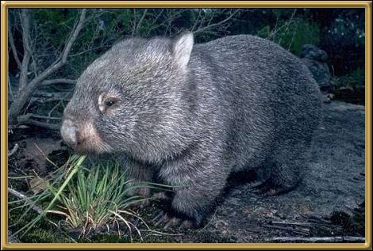

This is perhaps the prettiest of the wombats! Their status is secure and they grow to 90-120cm (35-47 inches). Unfortunately you most often see wombats as victims of car accidents. The two other members of the wombat family are the Northern Hairy nosed Wombat - now endangered; and the Southern Hairy Nosed Wombat - vulnerable.
Photographer: Unknown